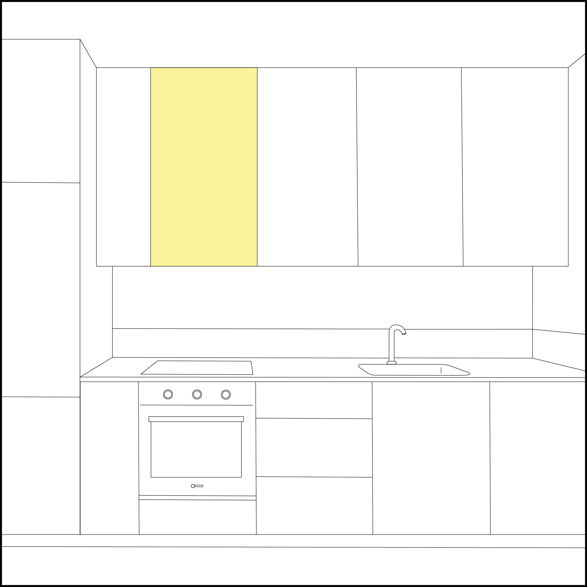

no animals, humans, or earth harmed in this process. the bowl of fruit is all in season, which means there's no extra carbon footprint from shipping.
eggs and bacon are animal products, and these animals have most likely come from horrid living conditions. Even if the chickens who produce the eggs were “cage free,” they are still living on top of each other, just not barred up. It takes 2,400 gallons of water to produce only one pound of beef.
continue
eggs and bacon are animal products, and these animals have most likely come from horrid living conditions. Even if the chickens who produce the eggs were “cage free,” they are still living on top of each other, just not barred up. It takes 2,400 gallons of water to produce only one pound of beef.
continue